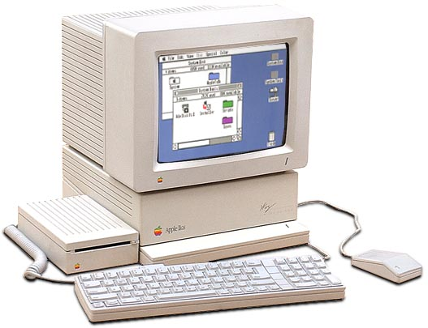
Powyższe zdjęcie zapożyczone zostało ze strony https://oldcomputers.net/appleiigs.html
1. KARTY ROZSZERZENIA RAM
Do Apple 2gs używa się wielu kart rozszerzeń. Podstawową kartą jest karta rozszerzenia pamięci montowana w specjalnym slocie. Oto wygląd typowej karty o podstawowej pojemności 256k rozszerzalnej do 1M przez włożenie kostek 41256 w wolne podstawki. Na poniższym zdjęciu widać dwa obsadzone banki 256K: pierwszy (kostki UA1 - UA8 wlutowane) i drugi (UA9 - UA16 włożone w podstawki). Banki trzeci i czwarty nie są obsadzone. Karta ma więc pojemność 512K. Po prawej stronie zaznaczono złącza do zakładania zworek konfiguracyjnych pamięci; po obsadzeniu wszystkich banków oba złącza powinny być zwarte:
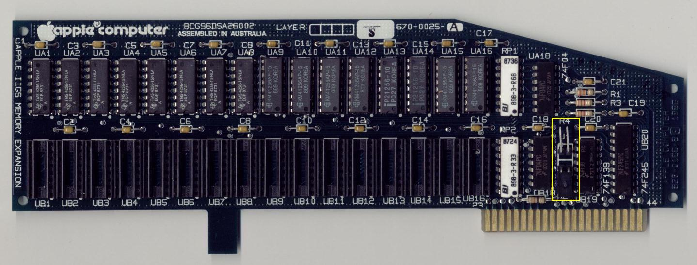
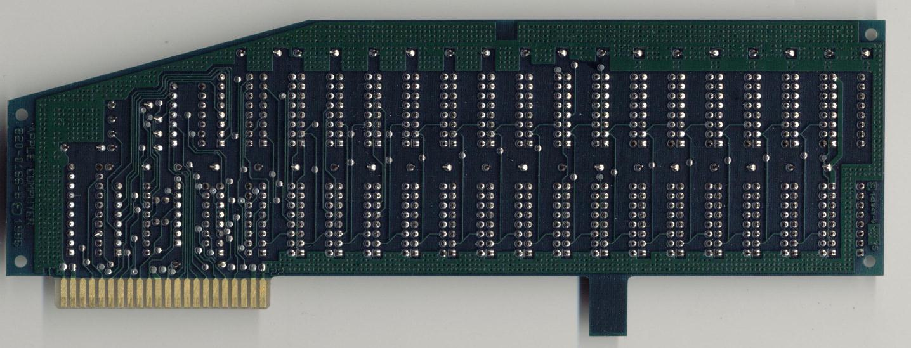
Apple nie produkowało kart o pojemności większej od 4M. Kartę o pojemności 4M przedstawiają poniższe zdjęcia:
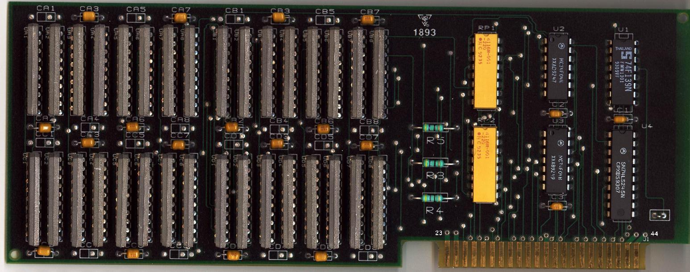
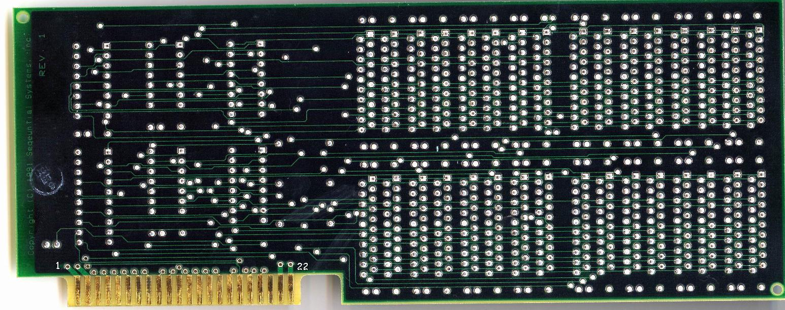
Karty o wększej pojemności (8M, 12M)produkowane były przez inne firmy. Współpraca tych kart z komputerem była możliwa po załadowaniu odpowiedniego patch'a dla managera pamięci znajdującego się w ROM komputera. Jedną z takich kart jest Sirius Ram. Przedstawiają ją poniższe zdjęcia:
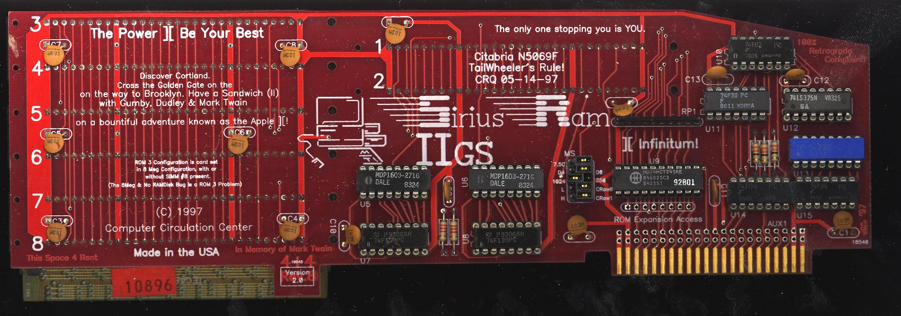
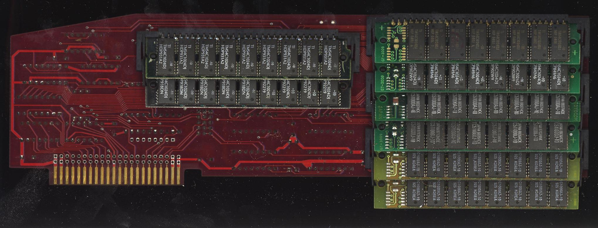
Zdjęcia te otrzymałem od bardzo miłego człowieka zza Wielkiej Wody, Richarda Jacksona https://rich12345.tripod.com, któremu tą drogą chciałbym złożyć serdeczne podziękowania.
Komputer posiada zbyt małą pamięć dla nowych systemów operacyjnych. Karty z 4M pamięci są trudno dostępne, więc chciałbym przedstawić sposób przekształcenia karty 1M w 4M. Na zdjęciach przedstawione zostały kolejne fazy pracy:
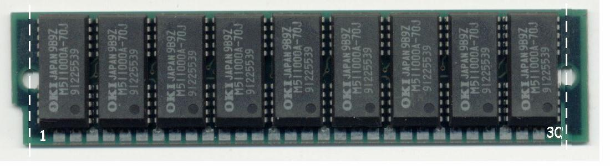
Do tego potrzebne będą 4szt. SIMM 1MB starego typu 30pin i, oczywiście, karta 1M. SIMMy powinny mieć 8 lub 9 kostek pamięci. Każdy SIMM trzeba obciąć z obydwu stron w miejscach oznaczonych linią przerywaną tak, by zmieściły się obok siebie na karcie w miejscu wylutowanych elementów.
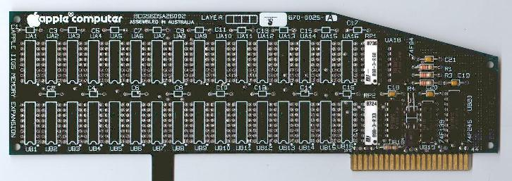
Z karty powinno się wylutować wszystkie układy pamięci, podstawki pod układy pamięciowe i kondensatory blokujące. Napisałem powinno, bo nie jest to niezbędnie konieczne, ale znacznie upraszcza późniejsze wykonanie połączeń.
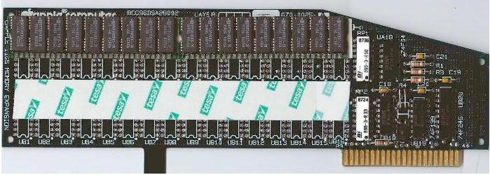
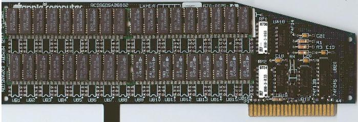
SIMMy przyklejamy za pomocą dwustronnej taśmy klejącej w miejscach pokazanych na powyższych zdjęciach zwracając uwagę, by by część otworów po pamięciach pozostawić odsłonięte. Posłużą one do przeprowadzenia przewodów na drugą stronę płytki w celu połączenia z otworami zakrytymi przez SIMMy. Z tego też powodu należy je oczyścić z cyny. Na schemacie przedstawione zostały wyprowadzenia układu 41256 dla ułatwienia wykonania połączeń.
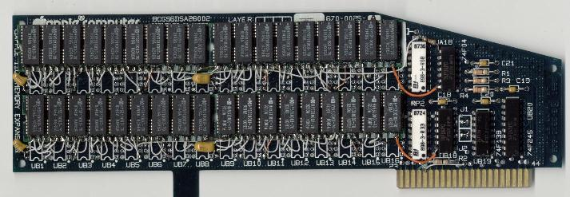
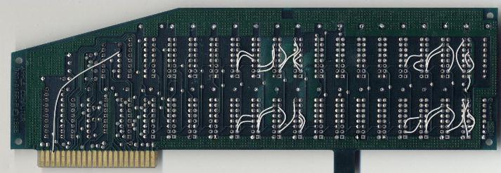
Potem pozostaje wykonanie połączeń kynarem zgodnie ze schematem. Poszczególne pady SIMMa łączymy z odpowiadającymi im otworami karty pamiętając, by D0 - D7 podłączać do odpowiadających im otworów nr 2 lub 14 (są zwarte na karcie) po kolejnych układach pamięci tego samego banku. Należy jeszcze przeciąć ścieżkę prowadzącą do styku 27 złącza karty i styk ten połączyć z masą. Należy też dodatkowo połączyć pin 3 złącza z wejściem jednego z trzech wolnych inwerterów układu UA18 74F04. Wyjście tego inwertera należy połączyć przez rezystor 33W z połączonymi padami nr 18 SIMMów. Połączenia zasilania należy wykonać grubszym przewodem. Pamiętać też należy o założeniu zworek na obydwa złącza J1 i J2. Złącza można wylutować i zworki wlutować bezpośrednio w płytkę.
Po zakończeniu prac należy dokładnie obejrzeć nasze dzieło i sprawdzić, czy nie ma błędów w połączeniach i zwarć. Po włożeniu karty na miejsce i uruchomieniu komputera z wciśniętym klawiszem Option wchodzimy do panelu sterowania (opcja nr 1) i dalej do RAM Dysku. Powinny się wyświetlić następujące wartości:
NAZWA
PARAMETRU |
WARTOŚĆ
(ROM 01) |
WARTOŚĆ
(ROM 03) |
| |
Minimum RAM Disk Size:
|
0K |
0K |
Maximum RAM Disk Size: | 0K | ---- |
- Largest Selectable: | 4096K | 4992K |
- RAM Status - | | |
RAM Disk Size: | 0K | 0K |
Total RAM in Use: | 84K | 84K |
Total Free RAM: | 4267K | 5163K |
Jeżeli wcześniej była ustawiona pewna wielkość RAM Dysku, to parametry odpowiednio się zmienią, ale wielkość Total Free RAM powinna być taka jak w powyższej tabeli.
2. KARTY TWARDEGO DYSKU
No tak... Pamięć mamy rozszerzoną, GS OS 6.0.1 hula jak trzeba, ale zaczyna być trochę niewygodnie. Ciągłe przerzucanie dyskietek zajmuje dużo czasu. Trzeba pomyśleć o szybszym i pojemniejszym nośniku, jakim jest twardy dysk. Apple produkowało karty z interfejsem SCSI różnych wersji. Pierwszą z nich przedstawia poniższe zdjęcie:
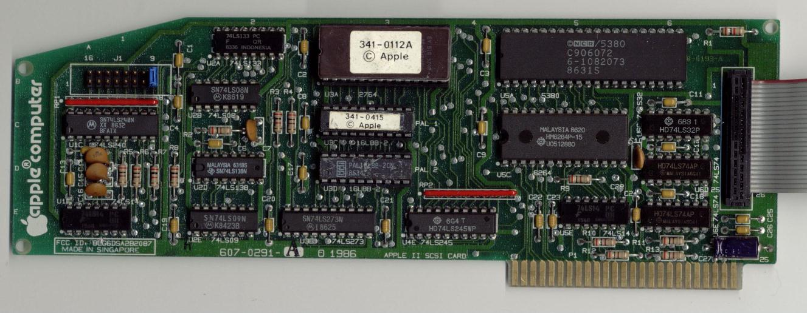
Jest to karta wersji A i nadaje się do wcześniejszych modeli Apple II. Do Apple IIgs można poszukać karty High Speed SCSI:
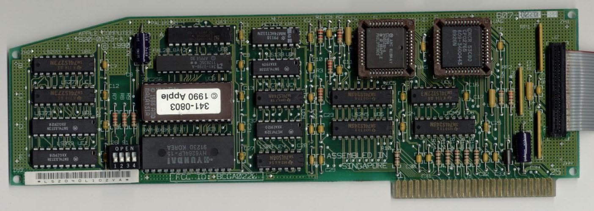
Karta taka kosztuje obecnie ok. 100$. Można też pokusić się o zakup karty IDE, np. karta CFFA, która pozwala na dołączenie dysku IDE 2,5" bądź zamiast niego zastosować można kartę Compact Flash, czy też karty Turbo IDE, Micro Drive IDE. Elektronikom amatorom lubiących tworzyć własne konstrukcje polecam interfejs IDE do Apple IIe/IIgs konstrukcji Stephane Guillarda.
3. KARTY GRAFIKI
Do zaawansowanej, wielokolorowej grafiki należało by użyć STOLL FARB-CONTROLLER. Bliższych danych tej karty nie udało mi się nigdzie znaleźć, ale jej rozbudowana konstrukcja zapowiada ciekawe efekty: Dla zainteresowanych sporządziłem schemat (w tabelce poniżej).
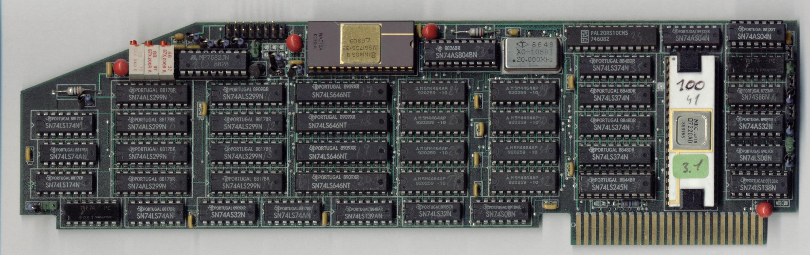
4. SCHEMATY
| NAZWA PLIKU |
OPIS ZAWARTOŚCI PLIKU |
| |
| Schemat ideowy przeróbki karty rozszerzenia pamięci z 1M do 4M |
| Schemat ideowy karty sterownika wyświetlacza 7-segmentowego |
| Schemat ideowy karty tekstu 80-kolumnowego |
| Schemat ideowy typowej karty do FDD do Apple II/IIe |
| Schemat ideowy karty SCSI Rev. A |
| Schemat ideowy karty CP/M z procesorem Z80 |
| Schemat ideowy karty portu drukarki |
| Schemat ideowy karty High Speed SCSI |
| Schemat ideowy karty sterownika napędów dyskietek firmy Indus |
| Schemat ideowy karty sterownika myszki |
| Schemat ideowy karty portów równoległych Stoll Parallel Card |
| Schemat ideowy zasilacza Apple 2gs wersja europejska (230V AC) |
| Schemat ideowy karty portu szeregowego do Apple II |
| Schemat ideowy karty kolorowej grafiki Stoll Farb-Controller |
| Schemat połączeń kabla Apple IIGS - SCSI |
Ostatnia aktualizacja 10.VIII.2024
Obejrzyj też inne moje strony:
- to strona o komputerach (i nie tylko) firmy ATARI
- to strona o różnych komputerach ośmiobitowych
mailto: dereatari@op.pl